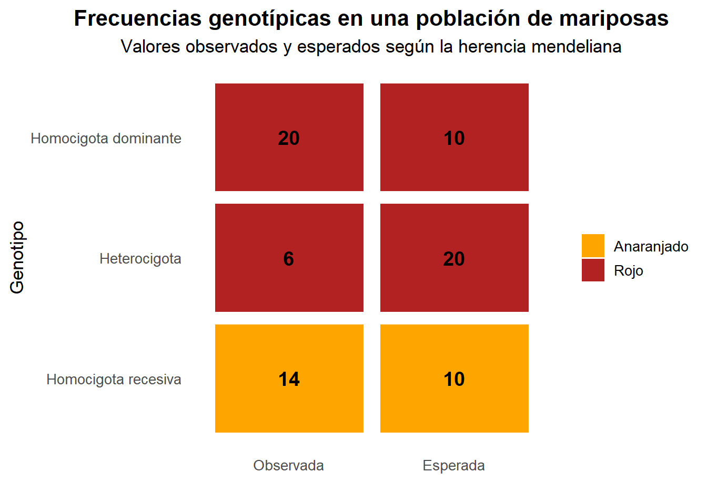

{kind=link}
Warning: package 'ggplot2' was built under R version 4.4.3
Adjuntando el paquete: 'dplyr'The following objects are masked from 'package:stats':
filter, lagThe following objects are masked from 'package:base':
intersect, setdiff, setequal, unionWarning: package 'tidyr' was built under R version 4.4.3# Crear los datos
datos <- data.frame(
Genotipo = c("Homocigota dominante",
"Heterocigota",
"Homocigota recesiva"),
Fenotipo = c("Rojo", "Rojo", "Anaranjado"),
Esperada = c(10, 20, 10),
Observada = c(20, 6, 14)
)
# Pasar a formato largo y definir órdenes
datos_largos <- datos %>%
pivot_longer(
cols = c(Esperada, Observada),
names_to = "Tipo",
values_to = "Frecuencia"
) %>%
mutate(
Tipo = factor(Tipo, levels = c("Observada", "Esperada")),
Genotipo = factor(
Genotipo,
levels = rev(c("Homocigota dominante",
"Heterocigota",
"Homocigota recesiva"))
)
)
# Gráfico tipo cuadro ilustrativo
ggplot(datos_largos,
aes(x = Tipo, y = Genotipo, fill = Fenotipo)) +
geom_tile(color = "white", width = 0.9, height = 0.9) +
geom_text(aes(label = Frecuencia),
size = 5,
fontface = "bold") +
scale_fill_manual(values = c("Rojo" = "firebrick",
"Anaranjado" = "orange")) +
labs(
title = "Frecuencias genotípicas en una población de mariposas",
subtitle = "Valores observados y esperados según la herencia mendeliana",
x = "",
y = "Genotipo"
) +
theme_minimal(base_size = 13) +
theme(
legend.title = element_blank(),
panel.grid = element_blank(),
plot.title = element_text(face = "bold", hjust = 0.5),
plot.subtitle = element_text(hjust = 0.5)
)